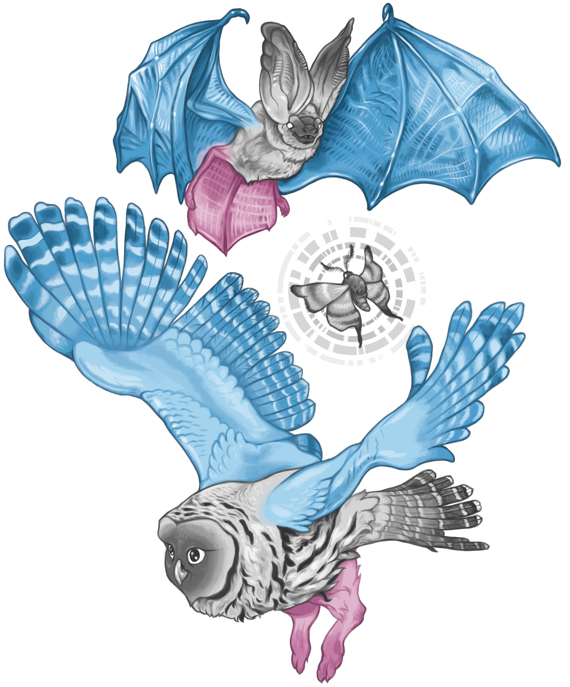
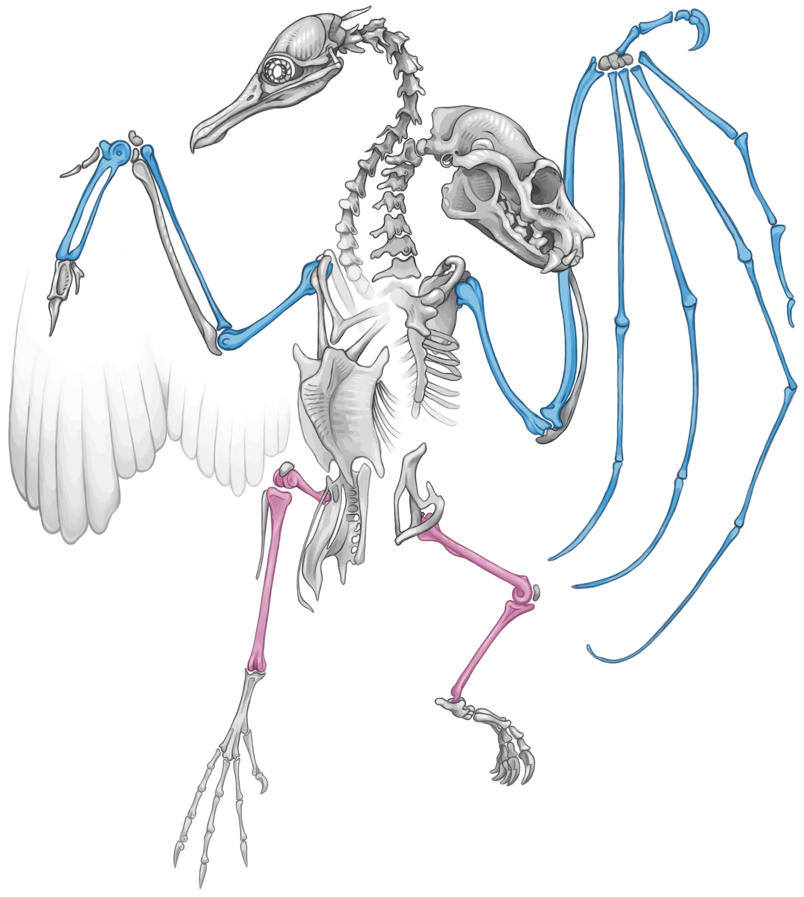
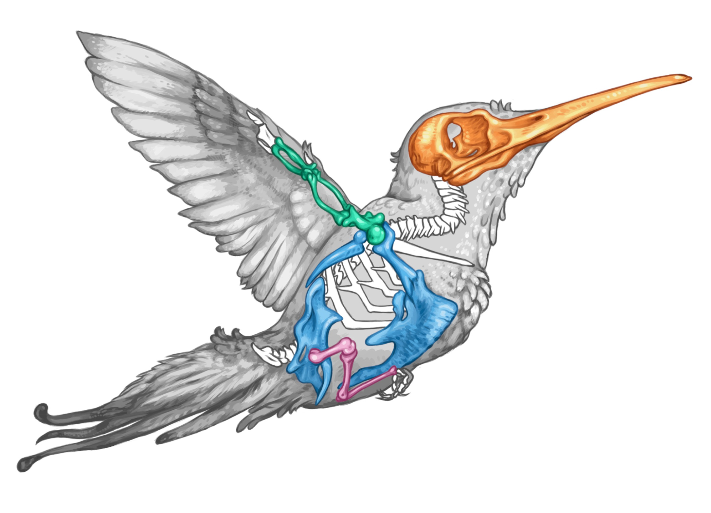
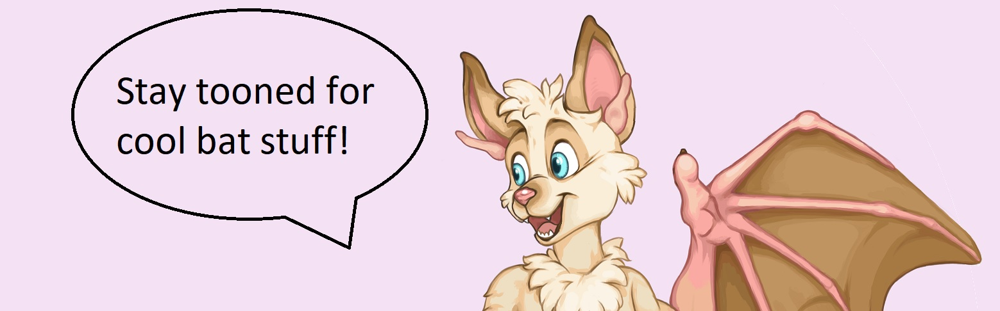
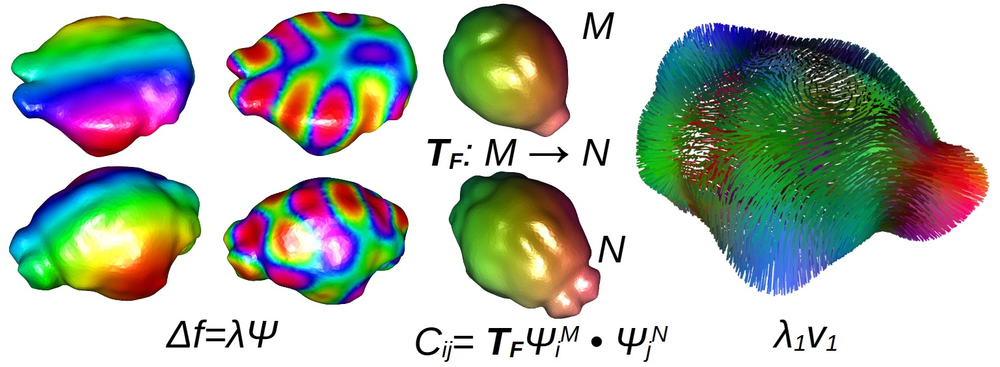
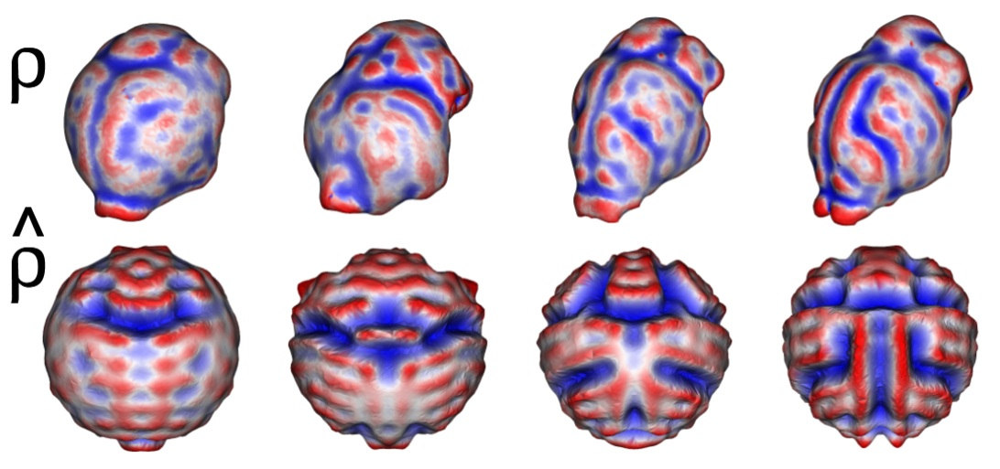
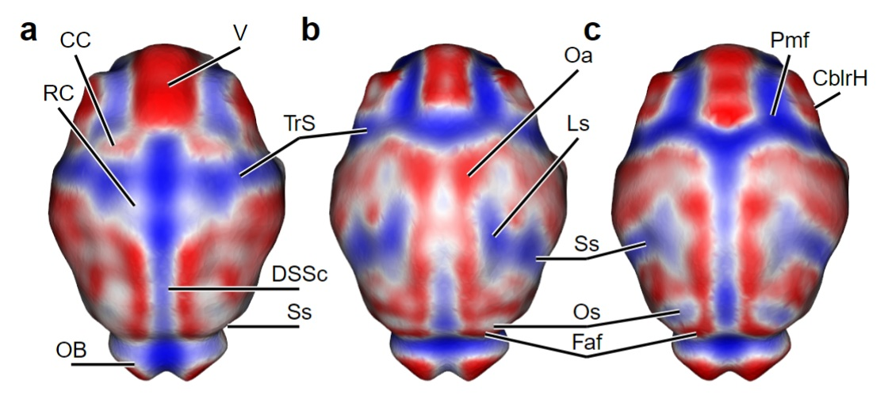
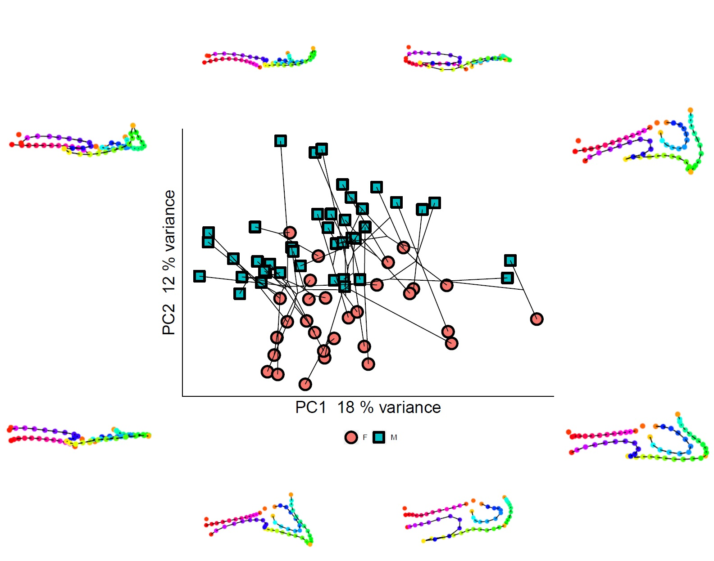
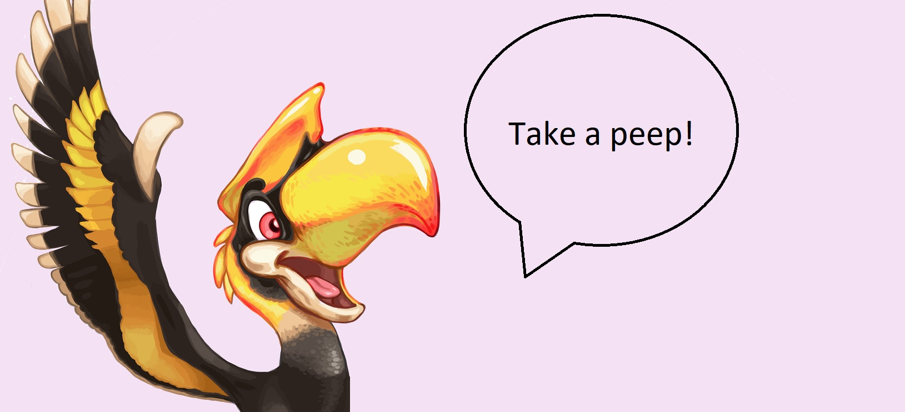
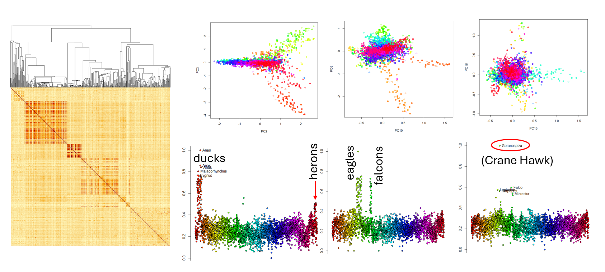

Home
This is the personal website of Dr. Andrew Orkney, evolutionary biologist, visual artist and animal aficionado.
My research portfolio is available at: my ORCiD page and my my Google Scholar Profile
Initial java script and cascading style sheets were sourced from: https://github.com/cplmakerlab
About
I'm Andrew Orkney, a postdoctoral researcher at Cornell University, College of Veterinary Medicine, Department of Biomedical & Translational Sciences. I formerly worked with the Hedrick Lab studying the evolution of morphological traits in birds and bats, and I now work with the Das Lab where I am cultivating new skills in computational genetic methods. I am seeking faculty positions which present an opportunity to explore tantalizing questions in evolutionary biology, mentor and lecture students. Accessible summaries of my ongoing research questions are presented in my 'Projects' tab, and I will provide research and teaching statements upon request.
My essential interests in science are animals and mathematics; researching biological evolution proivdes a jungle-gym in which they coincide. I am motivated by an essential desire to explore. My research projects are primarily concerned with the process of research and the different possible approaches and paths that exist towards solving problems. My past research has been focused on animal skeletons, using sophisticated high-resolution CT-scanning and digital reconstruction techniques to build quantitative datasets of animal traits, which are then investigated in linear algebraic frameworks. More recently, I have become increasingly interested in data embedding approaches, techniques to describe full manifold geometry of biological surfaces (including soft tissues such as brains), and approaches in evolutionary modeling that may encompass 'structural missingness', so that diverse datasets with sparse trait information can be investigated. All this provides an excellent opportunity to involve students in engaging state-of-the-art research while also teaching them valuable transferable skills in maths and computing (in particular approaches in R and Python) that will benefit them in a wide variety of future career paths. My most recent work now encompasses computational genetics, wherein I am applying sparse matrix decomposition methods to produce quantiative heuristics that describe the properties of highly repetitive non-coding regions, whose sequence properties are hypothesized to encode evidence of evolutionary changes in mechanisms that orchestrate chromosome segregation and recombination. Beyond data collection and analysis, I am committed to closely mentoring students to develop their public presentation skills and confidence, reflected by my receipt of a Cornell University Postdoctoral achievement award for excellent in mentoring. I view mentoring as one of the most enjoyable aspects of my work and a major avenue to improve participation and joy among historically under-represented groups of people in science.
Outside of work I am a trained artist. I paint animals, participate in and help to set up exhibitions. See my 'Art' tab for examples of artwork which are included in my published and upcoming manuscripts. As a new faculty hire I will therefore bring not only excellence in research and a commitment to teaching that includes student participation in publications, but also a capacity to contribute to University cultural activities, especially those which encourage public engagement with the biological sciences.
Art



The Big Question
My research projects all surround the same Big Question. Much of the evolutionary sciences is concerned with the what and the why; what adaptations does an organism possess that enable it to survive, and why does it have them? I am more interested in the 'why not'. Why do some organisms not acquire adaptations that might otherwise benefit them? This meta-level question seeks to understand the processes which regulate adaptive responses. We can imagine that they are contingent on initial conditions, stepping-functions that determine how integenerational variety is produced, and stochastic variables- when dumb luck might change the course of history.
Bats

I study bats because they are an amazingly diverse collection of animals, doing all sorts of jobs. Many use sophisticated echolocation to hunt insects, but others might seek-out delicious fruits, drink nectar, blood, catch fish, lizards or even eat other bats. As part of this work I compiled a large dataset of 111 CT scans of bat skeletal features and undertook an extensive literature review to build design matrices of ecological properties that permit the exploration of adaptation. Now, bats may be exceptionally diverse, but major changes in adaptation are actually quite rare, being limited to certain parts of the wider bat family tree. There are entire bat families whose ecologies are actually rather uniform, and whose environmental distributions are limited, often being restricted to tropical centeres of diversification. Therefore, bats are an excellent model system in which to explore the variables that permit adaptive differentiation; what are the stars that must align to permit shifts in ecological function and the morphological and behavioral traits that facilitate it? The two main areas I am set to explore are bat brain evolution and the intersection between sexually differentiated traits and changes in sex chromosomal system.
Bat Brains

Above; eigendecompositions of the spectral graph (using cotangent weights) of bat endocranial dissections (skull interiors). Contemporary mathematical methods from the computer graphics and biomedical literature can be used to find surface-surface mappings across brains and extract latent spaces of salient feature variety (the first eigenvector describes the relative prominence of the olfactory bulbs, which distinguishes insectivorous and frugivorous bats). I am developing approaches that leverage surface-surface mappings and integrate them with concepts such as the Dirichlet energy of local curvature and spherical harmonic decompositions to produce consistent vector embeddings of brain surface texture.
Bats are mammals, and their cortical surface is therefore characterized by wiggly folds and ripples. A well-estbalished body of literature exists advocating that the overall complexity of cortical folds should predict animals' capacity for adaptive intelligence, and that special cognitive capabilities might be contingent on the presence or absence of particular special folds. Perhaps we can hypothesize that the history of adaptive stasis or radiation across the bat family tree has been regulated by essential properties of their brains' folding characteristics. Maybe some schemes of brain folding, which might emerge for one reason or another (such as a response to increases in brain size imposing networking constraints on interiror whitematter tracts) alter the flexibility that the brain has to be adapted to support new foraging ecologies or types of sensory processing and integration (many bats possess sensory capabilities that would be regarded as super-powers if they were to occur in humans). However, the investigation of this question is frustrated by major challenges. It is difficult to reliably identify and describe corresponding brain feautres across different bats' brains, such is their variety. I am approaching this problem by exploring the manifold geometry of brain surface texture derived from their spectral graphs, using a combination of R and Python pipelines. I am in the initial exploratory phase, examining methods to describe surface texture and its complexity and identifying salient trait differences across bats' brains and their association with major shifts in foraging ecology across the family tree. Future research will examine whether physiological constraints on brain shape (such as potential selection against brains with high surface areas in seasonally cool environments) might explain the lability of brain surface textural evolution across bats and potentially reveal why the greatest diversity of novel foraging strategies and sensory adaptations have emerged in independent tropical radiations.

Above: An example approach that leverages eigenfunctional aligment across different brain surfaces to extract texture (fourth-root transformed vertex-wise curviture). Cuviture across different brains can then be decomposed in a Spherical Harmonic Basis, producing a vectorized description of texture that is easily compared across different animals in downstream analyses.

Above: These brains do not exist. This is a demonstration of the power of this approach. These brains represent different texture trait combinations that are discovered as modeled optima under a mean-reverting 'Ornstein–Uhlenbeck' (OU) process (similar to the temporal evolution of a stock-price), where the optimal trait combinations that cluster the overall dataset are found by sub-dividing the bat family tree and estimating consensus sphericla harmonic coefficients that these different samples of bats are reverting towards. The harmonic coefficients can then be inverted to produce predicted brain texture phenotypes. These predicted brains do not exist, but they are strongly evocative of different bat groups whose brain functions are known to be specialized to different foraging tasks. The predicts brains exhibit clear features described in the literature, even though these features were never annotated during the textural description, embedding or trait modeling pipelines.
Sexual dimorphism; is chromosomal rearrangement a gas-pedal for evolutionary innovation?

Sexual difference: A dataset being compiled by Post-Baccalaureate Caroline Goldstein suggests sexual difference in bat pelvis shape is so salient that it is evident even across multiple species separated by tens of millions of years of evolutionary divergence.
Female bats give birth to young that may weigh as much as a third of their body mass, meaning that the female and male bat pelvis bones experience very different selective forces and may have distinct optimal shapes (sexually antagonistic selection). Indeed, the bat pelvis bone is an incredibly sexually dimorphic structure. The relocation of coding genes that control the development of sexually dimorphic traits on to the sex chromosomes is one potential means by which sexually antagonistic selection can be accommodated by evolving animals. Ongoing work is exploring the evolution of 3D pelvis shapes across bats, novel sex-determining chromosomal systems and the resolution or persistence of sexual antagonism. Together, these insights proffer a deeper insight into sexual dimorphism- the chasmic dichotomy at the heart of what it means to be a sexually reproducing animal.
Surprisingly, while bats exhibit extreme sexual dimorphism in their pelvis shapes, there is scarce evidence that bird pelvis (known in birds as the 'synsacrum') shapes differ between males and females- even though the female pelvis must accommodate egg-laying and therefore has a different suite of functional challenges to the male pelvis. Perhaps, though, the extreme task of laying eggs in teeny-tiny hummingbirds, which can weigh as little as 2 grams, will prove an exception! The female hummingbird (the hummer-mamma) may even lay an egg that weighs more than her entire skeleton. Surely then, the hummer-mamma and hummer-papa will possess different pelvic shapes...and if they do not, then surely this indicates some amazingly restrictive and strong limiting obstacle in bird evolution.
Our research in bats will complement and inform research into sexual differences in pelvis shape in humans, especially in light of recent publications refuting a trade-off between locomotory and reproductive functions in women. Further analyses will reveal whether functional trade-offs exist across bat evolution, whether they are sex-specific, and help further refine thinking about the evolutionary context of sexual difference in other animals such as humans.
Birds


An example of a vectorized embedding based on the co-occurrence frequencies of unique words/tokens in foraging descriptions I scraped from the internet. Major bird groups are distinguished along divergent vectors in the latent space. Evidence of adaptive convergence and unique distinct ecologies is easily found.
I have an established record of publications in bird research, but have recently become more interested in birds because of their utility as a system to explore applications of Machine Intelligence in evolutionary and ecological research. In the past, I manually undertook extensive literautre reviews to produce highly dimensional multivariate descriptions of different birds' foraging ecologies. Sometimes this might take months. However, novel tools have emerged for language processing (such as Global Vectors or Bidirectional Encoders) that mean this process can now be refined and automated with expedience. I want to explore whether vector embeddings from natural language foraging descriptions of birds can provide a more detailed and faithful design matrix of ecological properties to explore bird adaptation. Manual scoring of animals' ecological properties represents a major impediment to new research in ecology because of the high amount of effort that needs to be invested, lingering ambiguities because of disagreements between different researchers about scoring procedures and so on. The application of methods in Machine Intelligence to these problems could facilitate some serious advances.
Click my CV to download a copy [last updated May 17 2026]:
Contact
For academic correspondance or employment questions please contact me at aco58@cornell.edu